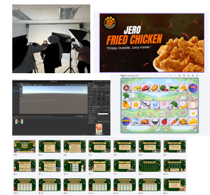
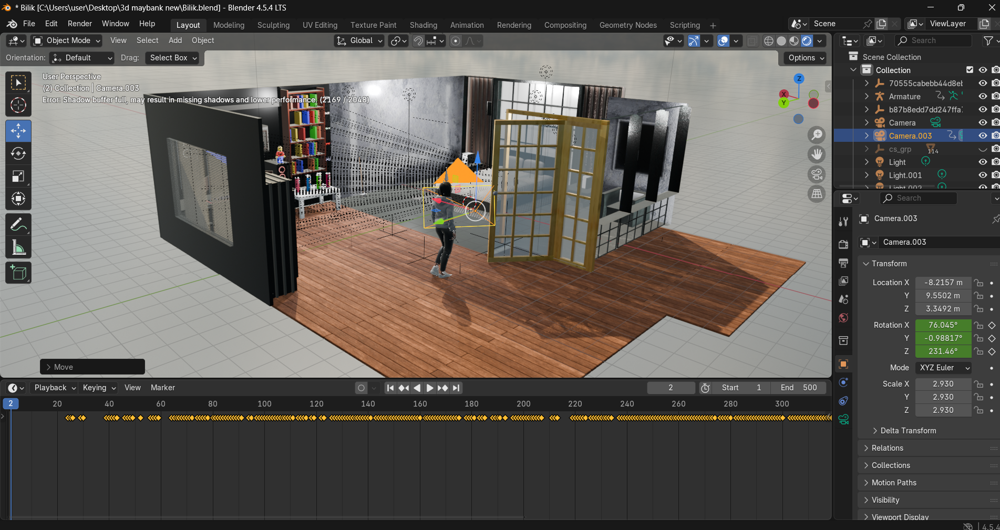
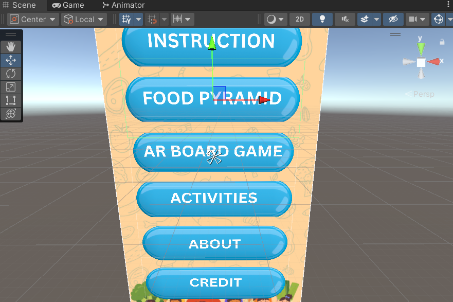

My journey in Media Informatics has been an exciting and rewarding experience. Since beginning this program, I have been exposed to various areas of technology, including web development, multimedia production, software engineering, user experience design, and interactive media.
Throughout my studies, I have worked on several academic projects that helped me develop both technical and creative skills. These projects taught me how to solve problems, work effectively in teams, and apply theoretical concepts to practical situations. I have also learned the importance of communication, critical thinking, and continuous learning in the rapidly evolving technology industry.
As I continue my journey, I hope to further improve my skills and gain more experience in software development and digital innovation. My goal is to become a professional who can create meaningful and impactful digital solutions that enhance user experiences and contribute to technological advancement.

Developing a 3D project was one of the most interesting experiences during my studies. This project allowed me to explore the process of creating digital models, designing virtual environments, and understanding how 3D assets are used in interactive applications and games.
Throughout the development process, I learned how to create and manage 3D objects, apply textures and materials, and optimize models for better performance. Attention to detail was important because every element contributed to the overall visual quality and user experience of the project.
This project strengthened my creativity and technical abilities while giving me valuable hands-on experience in digital content creation. It also helped me gain a deeper appreciation for the role of 3D technology in industries such as gaming, education, architecture, and virtual simulations.

Augmented Reality (AR) development has provided me with the opportunity to create immersive and interactive digital experiences. Using Unity as the main development platform, I worked on an AR project that focused on creating a realistic virtual environment where users could interact with digital objects and explore the virtual world.
During the project, I learned how to design AR environments, implement user interactions, and manage 3D assets within Unity. I also gained experience in understanding user comfort and navigation, which are important factors in creating an effective augmented reality experience.
This project improved my problem-solving skills and enhanced my understanding of emerging technologies. It demonstrated how AR can be applied in various fields, including education, training, healthcare, and entertainment. Developing this project has inspired me to continue exploring immersive technologies and their potential to transform the way people interact with digital content.